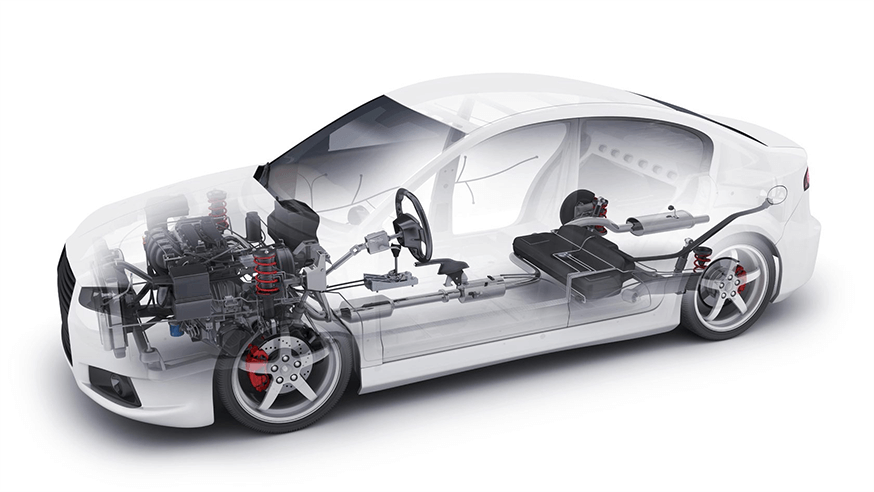

Что мы проверяем

Подкапотное пространство
Двигатель
КПП
Салон
Кузов
Оригинальность пробега
Ходовая часть
Тормозная система
Компьютерная диагностика
Электрика и электроника
Юридическая чистота и документы
Подкапотное пространство
Осмотр подкапотного пространства, на наличие течей, подтеков запотеваний, различных жидкостей. Проверка уровня эксплуатационных жидкостей и их состояния. Проверка работоспособности навесного оборудования, такого как: турбина, генератор, состояние впуска, выпуска, компрессора кондиционера и т.д.
Двигатель
Проверка состояния мотора, выявление, течей, подтеков, замер компрессии, проведение эндоскопии, выявление трещин в головке блока цилиндров. Проверка параметров мотора через компьютерную диагностику. Сопоставление состояния мотора и пробега.
КПП
Разные методы проверок для разных КПП. Коробка проверяется, на наличие пинков, рывков, толчков, ошибок (по компьютерной диагностике), параметров работы, остатки сцеплений (если DSG) и так далее. Также осматривается, состояние масла в КПП, и наличие течей и маслянных запотеваний.
Салон
По состоянию салона, можно определить (предварительно), как скрученный пробег, так и небрежное отношение к автомобилю. Также, некоторые продавцы, умело маскируют автомобили из под такси, с большими пробегами, под автомобиль от собственника и с маленьким пробегом. Как раз, эту «маскировку», мы и находим! Ну в конце концов, состояние салона, с точки зрения эстетики важный момент. Ведь именно в салоне, вы проводите больше всего времени со своим автомобилем.
Кузов
Проверяем кузов, на наличие окрасов, замененных деталей и элементов кузова, силовую конструкцию (лонжероны, стойки, места заводской сварки кузова). Фиксируем все косметические недочеты кузова. Выявляем скрытые кузовные ремонты. В первую очередь кузов осматривается, опытным специалистом, по принципу: «на глаз». ВАЖНО уметь находить окрасы и ремонты глазом, т.к. сейчас, часто стали красить «под толщиномер». После чего осмотр, проводиться с помощью толщиномера, зеркала, фонарика и другого необходимого оборудования. Также осматривается оригинальность остекления и оптики.
Оригинальность пробега
Стараемся сопоставить, всю, полученную в ходе осмотра, информацию об автомобиле, оценить состояние узлов, агрегатов, салона, кузова и сравнить с пробегом на щитке приборов. Также, находим пробег и моточасы из блоков, с помощью компьютерной диагностики.
Ходовая часть
Ходовая часть проверяется, как при помощи тест-драйва, так и при помощи осмотра на подъемнике. Осматривается состояние пыльников, амортизаторов, рычагов подшипников, тяг и т.д. Также автомобиль будет осмотрен на специализированной станции.
Тормозная система
Тормоза – Ваша безопасность. Осматривается общее состояние тормозных цилиндров, шлангов, суппортов, электронных помощников. Выявляется остаток тормозных дисков и тормозных колодок.
Компьютерная диагностика
Позволяет выявить как старые так и настоящие ошибки и отказы электронных систем. Также покажет множество параметров, работы мотора, турбины и АКПП, позволить посмотреть состояние подушек SRS, правильность работы электронных систем и помощников, а также в некоторых случаях установить точный пробег или моточасы.
Электрика и электроника
Проверяется работа всех электрических систем, приводов, заслонок и т.д. Проверяется работа каждой кнопки в салоне автомобиля. Устанавливается нарушение в работе тех или иных систем, помощников.
Юридическая чистота и документы
Проверяем автомобиль и владельца, по всем существующим базам, в том числе по платным. Также проверяем номер двигателя и VIN номер, сверяем их с документами. Производим расшифровку кодов комплектации и сопоставляем их с реальной комплектацией автомобиля. Проверка подлинности документов, истории обслуживания и всех собственников автомобиля. Проверка автомобиля на залог, запреты регистрационных действий, ДТП. Проверка собственника по службе судебных приставов.